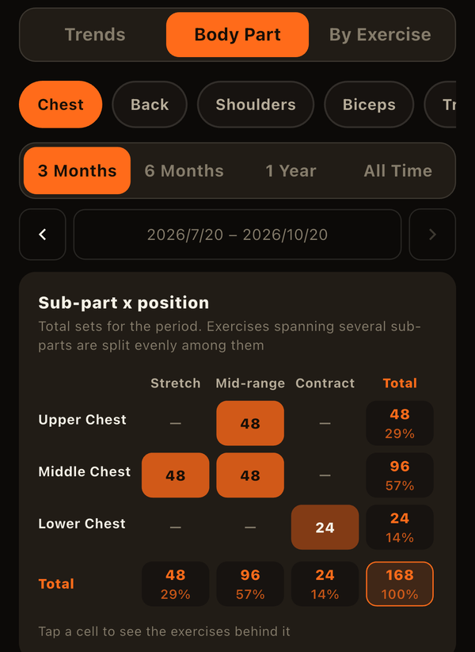

The bench press, dumbbell flyes, and cable crossovers all train the chest, but each gets hardest at a different point. Flyes are toughest with your arms wide and the chest fully stretched; cable crossovers are toughest with your hands squeezed together. Grouping exercises by this "point where the load peaks" is the idea behind POF (Position of Flexion).
The three positions
- Stretch: the load peaks with the muscle lengthened.
- Mid-range: the load peaks in the middle of the range. Most multi-joint pressing and squatting movements, where you can handle heavy weights, fall here.
- Contract: the load peaks with the muscle shortened. Many cable and machine exercises that keep tension all the way to the end of the movement belong here.
Examples by body part
- Chest: mid-range = bench press / stretch = dumbbell flyes / contract = cable crossovers, pec deck
- Biceps: stretch = incline dumbbell curls / contract = cable curls
- Triceps: stretch = overhead triceps extensions / contract = triceps pushdowns
- Shoulders: mid-range = shoulder press / contract = lateral raises, rear delt raises
- Hamstrings: stretch = Romanian deadlifts / contract = leg curls
- Quadriceps: mid-range = squats / stretch = Bulgarian split squats / contract = leg extensions
These are only guidelines. Cable angle, bench incline, and form can all change where the load peaks, even for an exercise with the same name. Some exercises are classified differently by different people, so feel free to go with what you feel.
Why think about position?
If you only do mid-range exercises, the ends of the range — especially the fully lengthened and fully shortened positions — tend to get less work. Combining all three positions lets you load the whole range of motion.
A growing number of studies also suggest that training a muscle in its lengthened position may favor muscle growth. For the triceps, for example, overhead extensions have been reported to build more muscle than the same movement with the arms down by the sides. The research is still developing, though, and it doesn't mean mid-range or contract exercises are unnecessary. A practical approach is to build around mid-range lifts, where it's easiest to add weight, and fill in with stretch and contract work.
How to rebalance
- For each body part, sort the exercises you've been doing by position
- Check whether your sets lean heavily one way (e.g. chest is all presses, so mid-range only)
- Swap in or add one exercise from an underused position (e.g. 2–3 sets of dumbbell flyes after bench press)
No need for a big overhaul. Run it for a few weeks and review it alongside changes in your lifts and body measurements.
In LiFTY, you can set a position (stretch, mid-range, or contract) for each exercise, and built-in exercises already come with a typical one. In the Analysis tab's "Body Part" view, a sub-part (such as upper chest or long head) x position table shows where your sets are concentrated (Using the Analysis Tab).

Related articles
- What Is Training Volume? How to Calculate It and Beat Plateaus
- What Is Estimated 1RM? The Epley Formula and How to Compare Your Progress
- What Is Progressive Overload? The Basic Principle Behind Every Gain
LiFTY breaks down each body part's sets in a table, using the position and sub-parts set on your exercises, so you can spot training imbalances right from your log. No account needed to start right away.
Download on the App Store